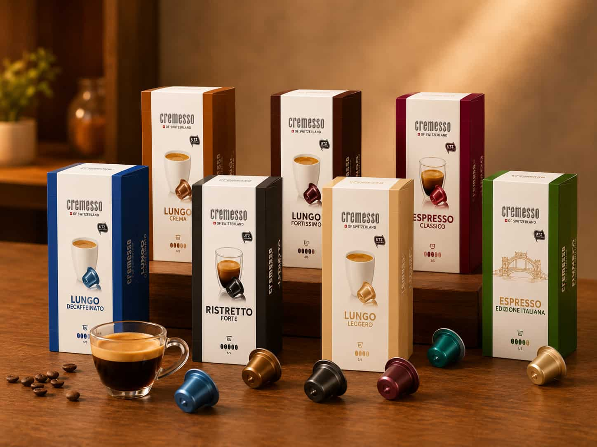
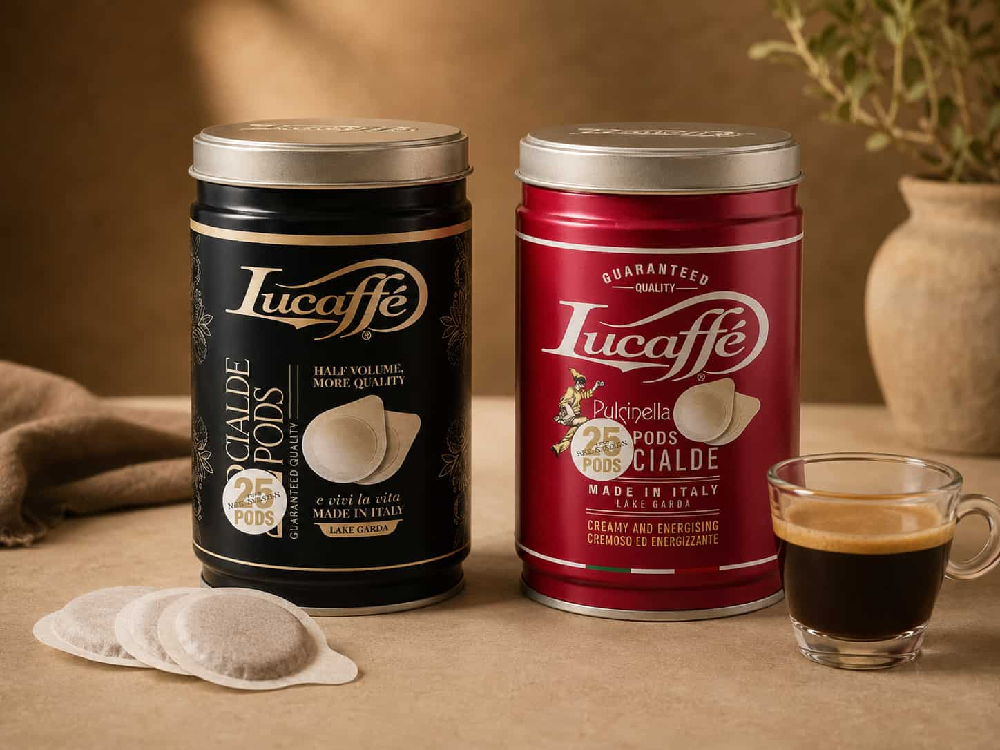
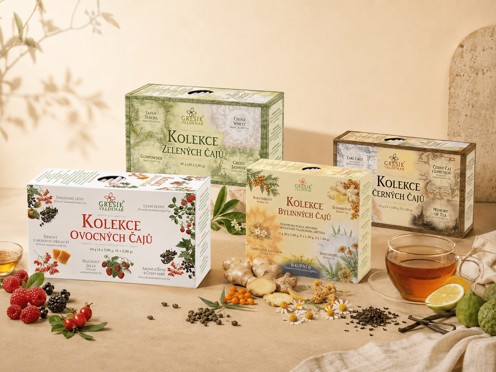
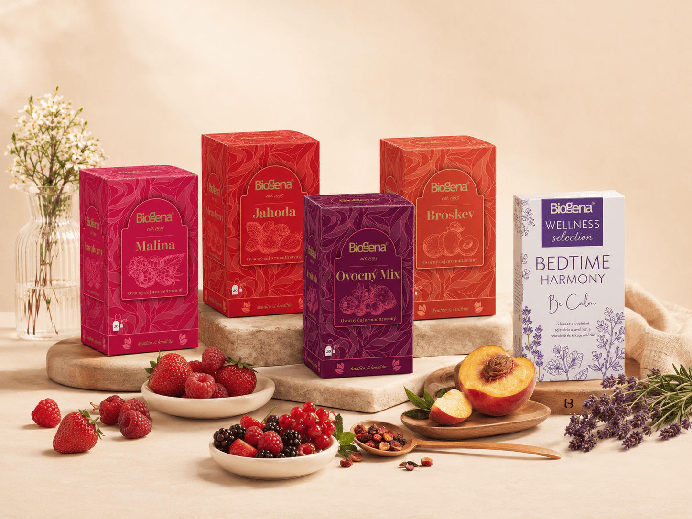

LuCaffé
Italská káva s charakterem, plná chuti a vášně. Tradiční pražení, které přináší nezaměnitelný zážitek z pravého espressa.


KÁVA A ČAJE
Pečlivě vybíráme kávové značky, které vynikají chutí, původem i zpracováním. Nabízíme také kvalitní čaje a doplňkový sortiment. Rádi vám pomůžeme vybrat tu pravou kávu pro domov, kancelář i podnikání.
Italská káva s charakterem, plná chuti a vášně. Tradiční pražení, které přináší nezaměnitelný zážitek z pravého espressa.
Švýcarská preciznost a dlouholetá tradice v každém doušku. Harmonická káva s bohatým aroma a vyváženou chutí.

Moderní česká pražírna s důrazem na čerstvost, původ a poctivé řemeslo. Kávy, které mají čistou chuť a jasný charakter.

Výše najdete naši běžnou nabídku káv, které prodáváme na prodejně. Hodí se pro pákové i automatické kávovary, domácí přípravu, kanceláře i menší provozy.
Kapsle Cremesso pro rychlou přípravu kávy s čistou chutí a pohodlným používáním každý den.

Tady bude doplněna další značka kapslí podle aktuální nabídky na prodejně.
E.S.E. pody s italským charakterem pro rychlé espresso a jednoduchou každodenní přípravu.

Tady bude doplněna další značka E.S.E. podů podle sortimentu, který chcete na stránce ukázat.
Tradiční česká značka s nabídkou ovocných, bylinných, zelených i černých čajů. Pečlivě vybrané suroviny a poctivé receptury přinášejí radost z každého šálku.

Kolekce ovocných a wellness čajů, které podporují pohodu, relaxaci i každodenní rovnováhu. Nabízíme je přímo na prodejně.

Kávu, čaj, kapsle i E.S.E. pody prodáváme přímo na prodejně. Přijďte si vybrat a rádi vám poradíme.